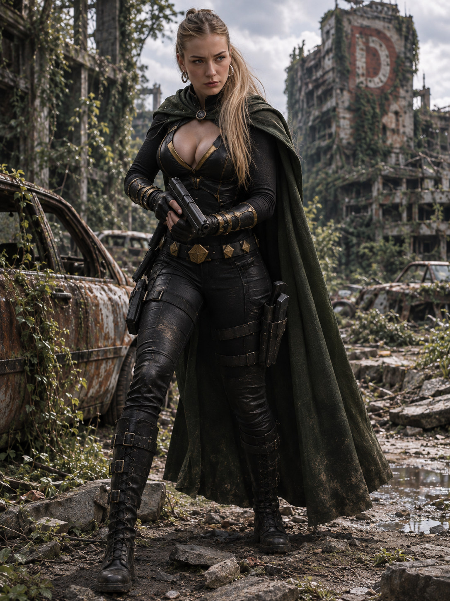
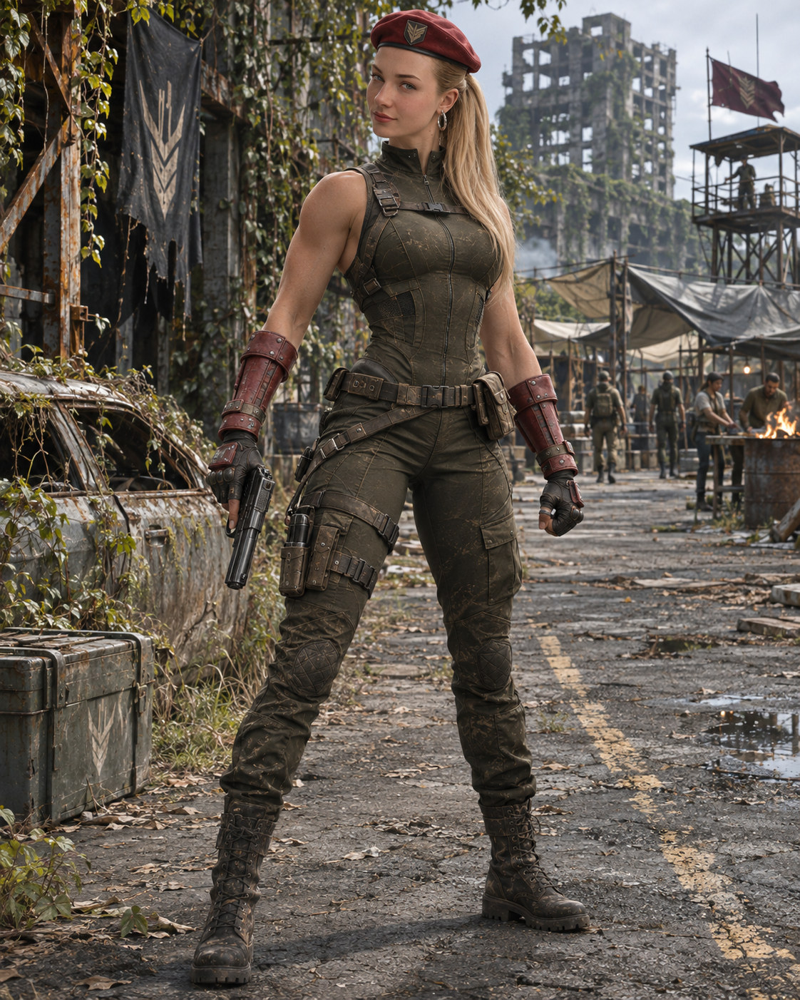

Patrick James Sullivan
Engenheiro civil. Responsável, trabalhador e dono de um humor irônico. Sua transferência levou a família de Calgary a Toronto.
KS-01 // ARQUIVO DO PRESENTE
Entre Calgary, Toronto e a Facção do Sal, Kelly construiu uma vida ao lado da família. Depois que os Hellsings salvaram aquela comunidade, ela escolheu seguir com eles.

KELLY MCKENZIE SULLIVAN
Kelly nasceu em Calgary, Alberta. Por volta dos quinze anos, mudou-se com a família para Toronto, depois que Patrick recebeu uma oportunidade profissional. Ela precisou se adaptar a outra cidade, a uma nova rotina escolar e a novos amigos.
Aos dezoito ou dezenove anos, estudava na universidade e fazia parte de uma equipe de líderes de torcida. Era competitiva, bem-humorada, curiosa e muito ligada à família. O curso que frequentava ainda não foi definido.
O Dia D interrompeu essa vida comum. Anos depois, Kelly já era uma sobrevivente experiente: primeiro ao lado da comunidade fundada por seus pais; depois, entre os Hellsings.
FRAGMENTOS GUARDADOS // ALGUNS AINDA EM REVISÃO
Abra cada registro para ler uma lembrança. As cenas domésticas são reconstruções literárias propostas para a personagem; os acontecimentos do Sal seguem os fatos já estabelecidos.
A neve cobria a calçada do bairro. Kelly desceu as escadas com a mochila no ombro, procurando a jaqueta. Na cozinha, um irmão caçava as chaves do carro, outro disputava o último pedaço de pão e Sophie tentava terminar uma atividade.
Catherine avisou que a jaqueta estava onde Kelly a deixara. Patrick, por trás do jornal, não aceitou que ela saísse sem café. “Então está atrasada e com fome. Senta.”
Kelly cedeu à torrada. Um dos irmãos riu: “A grande Kelly derrotada por uma torrada.” Ela lançou um guardanapo; Catherine pediu que os dois parassem. Por alguns segundos, a casa ficou quieta. Então Patrick começou a rir, e Kelly também.
CENA ESCRITA PARA O DESENVOLVIMENTO // A ROTINA FAMILIAR É CANÔNICA; ESTA SITUAÇÃO ESPECÍFICA É UMA PROPOSTA LITERÁRIA.
Owen insistia que a televisão só precisava de outra entrada. Patrick lembrava que trabalhava com engenharia havia mais de vinte anos. Na cozinha, Catherine preparava o jantar enquanto Sophie seguia Kelly pelo quarto, pedindo que ela fizesse seu cabelo igual ao dela no dia seguinte.
Declan apareceu com a notícia de que Liam não emprestaria o carro. Kelly protestou; ele brincou que ela quase arrancara o retrovisor. “Eu não arranquei nada. Só encostei!”
Ela lançou uma almofada em Declan, que escapou pelo corredor. Sophie tentou segurar o riso. Kelly disse que um apartamento só dela teria uma vantagem: Sophie não poderia pegar suas roupas. A irmã deu um empurrão de brincadeira, e as duas começaram a rir.
CENA ESCRITA PARA O DESENVOLVIMENTO DA FAMÍLIA // RECONSTRUÇÃO LITERÁRIA, NÃO UM REGISTRO HISTÓRICO FECHADO.
Patrick e Catherine estavam entre os fundadores da Facção do Sal, comunidade à qual Kelly pertenceu por anos. A Dominus coordenou um ataque contra o Sal com combatentes e infectados.
Os Hellsings intervieram e salvaram a comunidade. O resgate aproximou as duas facções; depois dele, Kelly deixou o Sal e passou a integrar o grupo liderado por Jack Connor. Na base, reencontrou Amber.
FATOS CONFIRMADOS PELO DOSSIÊ // DETALHES DA OPERAÇÃO E SUA DATA EXATA CONTINUAM EM ABERTO.
As imagens do projeto mostram Kelly escrevendo no bunker. O arquivo sugere que anotar nomes, lugares e pequenas lembranças pode se tornar uma forma de preservar o que o mundo tentou apagar.
A ideia de que esse hábito começou antes do Dia D, ou de que o primeiro caderno foi um presente de Catherine, continua como proposta. A página deixa esse detalhe aberto para você decidir quando desenvolver a história.
A ORIGEM DO DIÁRIO AINDA NÃO É CANÔNICA.
UMA VIDA DE ROTINAS PEQUENAS
Patrick James Sullivan era engenheiro civil; Catherine McKenzie Sullivan, professora de literatura. Eles criaram cinco filhos em uma casa movimentada, cheia de conversas, brincadeiras e disputas entre irmãos.
Kelly era a terceira. Liam e Declan eram os irmãos mais velhos; Owen e Sophie, os mais novos. As idades, profissões e características descritas no arquivo estão registradas, mas o destino de cada um depois do Dia D permanece em aberto.
O passado de Kelly não é uma vida de combate. É a lembrança da família e das escolhas que ela ainda não sabia que precisaria fazer.
SETE PESSOAS // UMA HISTÓRIA COMPARTILHADA
Patrick e Catherine sobreviveram ao Dia D e participaram da fundação da Facção do Sal. O que aconteceu com eles e com os filhos nos anos seguintes ainda precisa ser contado.
Engenheiro civil. Responsável, trabalhador e dono de um humor irônico. Sua transferência levou a família de Calgary a Toronto.
Professora de literatura. Acolhedora, perspicaz e firme; uma presença atenta à vida dos filhos.
Técnico automotivo; responsável e protetor.
Estudante de fisioterapia; extrovertido, competitivo e brincalhão.
Curiosa, determinada, competitiva e muito ligada à família.
Estudante do ensino médio, interessado em computadores, videogames, filmes e eletrônica.
Curiosa e criativa; gostava de desenhar, experimentar penteados e acompanhar Kelly.
DESTINOS EM ABERTO Os registros confirmam que Patrick e Catherine sobreviveram ao Dia D. A sobrevivência dos irmãos e o destino posterior dos pais ainda não foram definidos.
UMA LINHA DO TEMPO COM LACUNAS ASSUMIDAS
CALGARY
Kelly nasce em Calgary e cresce com os pais, os irmãos e os amigos de infância Amber e Josh.
POR VOLTA DOS 15 ANOS
A família se muda para Toronto por causa do trabalho de Patrick. Kelly começa outra rotina escolar e esportiva.
18–19 ANOS // DIA D
O colapso interrompe os planos de Kelly. Patrick e Catherine sobrevivem; o que ocorreu com cada filho durante e depois desse período continua sem definição.
ANOS DEPOIS
Patrick e Catherine estão entre os fundadores da Facção do Sal. Kelly permanece ligada à comunidade por anos; a estrutura e a história completa da facção seguem em desenvolvimento.
ATAQUE COORDENADO // DOMINUS
A Dominus ataca a comunidade com combatentes e infectados. Os Hellsings intervêm e salvam o Sal; a aliança entre os grupos nasce desse resgate.
APÓS O RESGATE
Kelly deixa a Facção do Sal e entra para os Hellsings de Jack Connor. Na base, reencontra Amber, já acolhida pela equipe.
ERA DA EXTINÇÃO // PRESENTE
Agora na faixa dos 38–39 anos, Kelly é uma sobrevivente experiente. Seu arquivo a descreve em missões de reconhecimento, exploração e retorno com suprimentos e informações.
RECONSTRUÇÃO LITERÁRIA // BASEADA NOS FATOS REGISTRADOS
A Facção do Sal não era apenas o lugar onde Kelly viveu por anos. Seus pais estavam entre as pessoas que ajudaram a fundá-la. Quando a Dominus lançou um ataque coordenado com combatentes e infectados, a ameaça alcançou uma comunidade construída ao longo do tempo.
Os Hellsings chegaram e conseguiram salvar o Sal. A aliança que veio depois mudou o rumo de Kelly: ela deixou a facção da família e passou a caminhar com a equipe de Jack.
Na base, encontrou Amber novamente. A amiga de infância também carregava uma trajetória difícil: depois de passar anos na Facção do Fogo, foi abandonada pelos próprios companheiros e resgatada por Naomi, Lee e Britney. Já Josh seguiu outro caminho e permanece entre os Cobras.

HABILIDADES DESCRITAS NO ARQUIVO
O material apresenta Kelly como exploradora e combatente experiente. Não há números confirmados de missões, abates ou pessoas salvas; por isso, o dossiê não atribui estatísticas a ela.
Explora áreas desconhecidas e recolhe informações úteis para o grupo.
Missões de Kelly podem incluir o retorno ao bunker com suprimentos e dados de campo.
Sua experiência inclui combate e sobrevivência em um mundo transformado pelo Dia D.
CALGARY // TORONTO // FACÇÃO DO SAL // HELLSINGS
As galerias estão separadas pelo período da vida de Kelly. As imagens são ilustrações de cenas do universo, não fotografias documentais.
ÁLBUM 01 // ARQUIVO DO PASSADO
ÁLBUM 02 // ARQUIVO DA EXTINÇÃO
CONTINUIDADE // PRÓXIMOS REGISTROS
Alguns espaços continuam abertos para que a história cresça sem contradizer o que já foi estabelecido.